Chapter Six
Section (b)
Quranic Ayaat on the Virtues of Remaining Patient in Afflictions
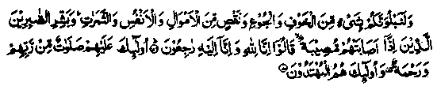
"And surely We shall test you with something of fear (of the enemy or of impending adversities) and (something of) hunger and some loss of wealth and lives and fruits (so, if anything of the kind befalls you, you should bear it patiently); but give glad tidings to those who persevere patiently. Those who, when a misfortune strikes them, say: Lo! We belong to Allah and to Him shall we return’. Such are they on whom are (showered choicest) blessings of Allah and His mercy; such are the rightly guided." (al-Baqarah: 155-157)
Note: When one is stricken with a calamity, it is of great benefit to recite the Ayat, "Lo! We belong to Allah and Lo! Unto Him shall we return’. The recital becomes more effective, earns greater rewards and endows one with a rare peace of mind if one also understand the meanings of the Ayat and, while reciting it, keeps in mind its true significance. Here is a fuller translation of the Ayat:
Verily we all of us (our lives and our possessions) belong to Allah. (And the Master has every right to make use of His belongings howsoever He pleases). We all have to return to Allah. (al-Baqarah: 156)
That is to say, we have to return to Him after we die; and He will bestow upon us liberal compensation for the loss and the hardships we have endured in this life. We observe that, if a person suffers a loss in the world but, at the same time, he is assured o' receiving a big fortune as compensation, he is not worried about the loss. Similarly, if a man were to possess firm faith in the bounties U be bestowed by Allah Ta'ala in the Akhirah, he would never feel worried about the worldly loss. But, as we are weak in faith (Imaan) even a slight loss or a little trouble becomes unbearable for us.
In many Ayaat of the Holy Qur’an, Allah Ta'ala has admonished us through brief references to, or elaborate expositions of, the belief that the world is a place of trials and tribulations, where one has to go through various tests. Sometimes people are put to test through abundance of wealth, with regard to the sources of income and the manner of spending it At other times, Allah puts us to a trial through poverty and hunger, in order to distinguish those who face it with patience and Salaat, from those who grumble and complain.
Hence, there are frequent exhortations, in the Holy Qur’an, to remain patient and persevering, to turn to Allah Ta'ala for help and to resort to Salaat in all adverse circumstances. Time and again, Allah Ta'ala reminds His men that they are under a test in this life and that they should beware of a failure in it Out of numerous Verses on the subject, a few are quoted below, by way of illustration:
1. "And seek Allah’s help with patience and Salaat".
(al-Baqarah: 45)
(Commenting on the Ayat) Qataadah Rahmatullah alaihe says: "The two things Salaat and patience represent help from Allah Ta'ala. So, seek Allah’s help through these two virtues.”
Ibne Abbas Radhiallaho anho relates: "One day, I was riding behind Rasulullah Sallallaho alaihe wasallam when he said to me, "Young man,I give you a few words of advice and, (I believe) Allah Ta'ala may help you to benefit by them". When I most humbly submitted, ‘Do tell me’, He said, "If you are mindful of Allah, (i.e. if you fulfil what Allah Ta'ala demands from you), He will be mindful of you (i.e. He will grant you His protection). And if you are mindful of Allah (i.e. if you fulfil what is due from you to Him), you will find Him readily available to help you at all times. If you are mindful of Him (i.e. remember Him) in prosperity, He will remember you (i.e. help you in adversity). Bear in mind that if a misfortune befalls you, it was pre-ordained, and, if a misfortune does not befall you, rest assured that it could not have visited you. Know that if all created beings were to unite to do you some favour that Allah Ta'ala had not decreed for you, they would never be able to do so. And if they were to unite to avert a misfortune, but Allah Ta'ala had willed it, they would never be able to du so. The pen of destiny has recorded all that has to happen till the Day of Resurrection. When you ask for anything, ask it from Allah Ta'ala and if you seek help, seek it from Him. When you put trust in anyone, do so in Allah alone. Perform deeds of devotion with a firm faith and a true belief in Allah, with feelings of gratitude to Him. Mind it well that patience in afflictions is a great virtue; that Allah’s help descends upon those who are patient, that with every suffering there is relief, and that adversity leads to prosperity. (That is to say, when you are in distress, be sure that it foreshadows days of ease and good cheer. Similarly, in straitened circumstances, you should be certain that days of prosperity lie ahead).’ It is related in a Hadith that "If anyone is hungry or in need and he conceals it from others, it becomes due from Allah Ta'ala to grant him a year’s sustenance through lawful resources."
Huzaifah Radhiallaho anho relates, "Whenever Rasulullah Sallallaho alaihe wasallam happened to face any difficulty, he would at once resort to Salaat’. Rasulullah remarked: "All the previous Ambiya Alaihimussalam also used to resort to Salaat in all difficult situations".
It is related that once, Ibne Abbas Radhiallaho anho was on a journey when he heard the news of the death of his son. He got down from his camel, offered two Raka'at of Salaat and recited: Lo! We belong to Allah and Lo! Unto Him we are returning. He then said, I have done what Allah Ta'ala has, in His Book commanded us to do, i.e.
"And seek Allah’s help through patience and Salaat".
It is related that in the last hours of his life, Ubaadah Radhiallaho anho said to the people around him, ‘I forbid you, one and all, to wail over me. And, it is my desire that when my soul departs, everyone should perform a perfect Wudhu (ablution), go to the Masjid, offer two Raka'at of Salaat and then pray for my forgiveness and his own. After that you should hurry to put me in the grave’. (Durre-Manthur)
2. O you who believe! (In all manner of afflictions) seek help with patience and Salaat. (al-Baqarah: 153)
3. And the patient in tribulation and adversity and time of stress. (al-Baqarah: 177)
The Ayat has been cited, in full, at No. 2 in Chapter one, part one of this book
4. Allah is with those who persevere patiently. (al-Baqarah: 249).
There are many Verses of the same import occurring at various places in the Holy Qur’an. Time and again, Allah exhorts His men to be patient, giving them the happy assurance that He will be with them if they persevere in the face of afflictions.
5. The patient and the truthful........ (Ale'Imran: 17).
The Ayat has been quoted, in full, at No. 1 above in the same section.
6. But if you persevere and keep from evil, their (the non-believers’) guile will never harm you. (Ale’Imran: 120)
7. Or deemed you that you would enter Jannah, while Allah knoweth not (i.e. Allah has not put you to trial and distinguished) those of you who really strove, nor knoweth (after trial) those (of you) who are patient and persevering. (Ale’Imran: 142).
(It should be borne in mind that, in this context, Jehaad or ‘striving’ includes all manner of efforts made for promoting the cause of Islam).
8. But if you persevere patiently and fear Allah (it is an excellent virtue), as these (perseverance and piety) are the highly regarded commandments of Allah. (Ale'Imran: 186)
9. Rasuls indeed have been charged with falsehood (by the non-believers) before thee and they remained under denial and persecution till our succour reached them. (Al-An'am: 34)
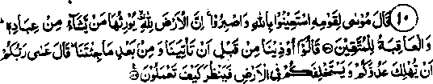
10. And Musaa said unto his people: ‘Seek help in Allah and bear up patiently. Lo the Earth is Allah’s. He gives it for inheritance to such of His servants as He will. And lot the ultimate success is for those who fear Allah’. They said, ‘We have been oppressed before you came to us, and since you have been with us.’ He said, ‘May be that you Lord is going to destroy your enemy soon and make you his successors in the land so that He may see how you behave." (al-A’raf: 128-129)
11. Lo! Allah hath bought from the believers their lives and their possessions because the Jannah will be theirs (as recompense). (at-Taubah: 111)
NOTE: The believers have pledged their lives and property to Allah Ta'ala in exchange for Jannah. As He Himself created them, He should be free to use them in whatever way He likes. It is incumbent upon the believers that they should be anxious to surrender their lives and property to the Buyer and should not feel grieved if Allah Ta'ala takes away what He Himself has purchased.
12. And (O Muhammad) follow that which has been revealed unto you, and be thou patient (and constant in the face of persecution by the nonbelievers) until Allah gives His judgement. (That is to say, they will either be ruined in this world or suffer punishment in the Hereafter). And He is the Best of all Judges.” (Yunus: 110)
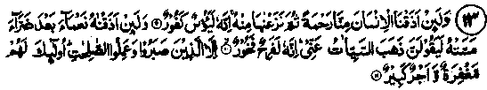
13. And if We cause man to taste some mercy from Ourselves (by granting him comforts of life and ample wealth) and afterwards withdraw it from him, Lo! He is despairing, ungrateful, And if We cause him to taste one of Our bounties after some misfortune that had visited him, he is sure to say, ‘All evil has departed from me (i.e. the period of misfortune is now over). Then Lo! He Is exultant, boastful; except those who endure with patience and do good deeds. Theirs will be forgiveness and a great reward. (Hood: 9-11)
14. Lo! He who fears Allah; and is patient, surely Allah will not let perish the reward of such as do good. (Yousuf: 90)
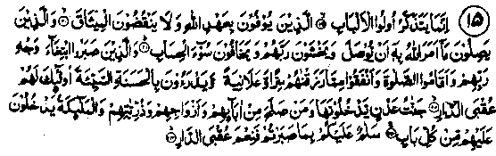
15. Verily it is only men of understanding who give heed to counsel. Such as fulfil the pledge which they made with Allah and do not break the covenant. Such as join together that which Allah has commanded (i.e. family relations) to be joined, and hold their Lord in awe, and fear the woeful reckoning (to be made on the Day of Judgment); such as persevere (in afflictions), seeking thereby the pleasure of Allah and they establish Salaat; and spend (for the cause of Allah) out of that which We bestowed upon them, secretly and openly and ward off evil with good (i.e. even if anyone ill-treats them, they treat him with kindness). Theirs will be the recompense of (heavenly Home-Gardens of Aden — which they shall enter, along with such of their fathers and their wives and their off-spring who do right (and therefore deserve entry into Jannah). The angels will enter unto them from every gate (saying): 'Peace (Salaam) be unto you; because you persevered firmly (in the practice of ‘Deen’) and were patient." How excellent will be the recompense of the (heavenly) Home (ar-Ra’d 19-24)
NOTE: Ibne Abbas Radhiallaho anho relates: The lowest in rank among the dwellers of Jannah will have a palace, made out of a single transparent hollowed pearl, consisting of seventy thousand apartments with seventy thousand doors to each apartment and, at each one of these doors, there will come seventy thousand angels to give Salaam (greetings) to him!"
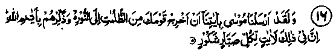
16. We verily sent Musaa with Our revelations (or clear signs), saying, ‘Bring thy people forth from darkness unto light and remind them of the Days of Allah (i.e. remind them of the turns of fortune which the past generations had to go through and explain to them how excellent the rewards were that fell to the lot of the righteous and how grievous the punishments were which the disobedient were made to suffer). Lo! therein are clear signs (admonitions) for such as are firmly patient, grateful and appreciative." (Ibrahim: 5)
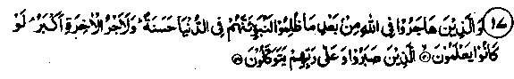
17. And those who migrated (performed Hijrah) for the cause of Allah, after they had been oppressed (by the non-believers), We verily shall give them goodly lodging in this world and surely the reward of the Akhirah is far greater, if they but knew (about its qualities and excellence); such as persevere in patience (in afflictions) and put their trust in Allah. (an-Nahl: 41 - 42)
18. If you taka revenge (upon those who oppressed you), afflict them with as much pain as you were afflicted with. But if you observe (restraint and) patience (and do not take revenge), verily it is (far) better to be patient. (Then Allah says, addressing Rasulullah in particular) Endure patiently, (O, Muhammad) and thy patience is only by (the help of) Allah. And grieve not for them (i.e. do not grieve over their enmity for you) and be not in distress because of that which they devise (against you). Lo! Allah is with those who restrain themselves (to remain on the path of righteousness) and are good to others. (an-Nahl: 126-128)
19. Lo! We have placed all that is on the earth as an adornment for it, and that We may put them to trial as to which of them are best in conduct." (al-Kahf: 7).
Ibne Umar Radhiallaho anho relates: "When Rasulullah Sallallaho alaihe wasallam recited this Verse, I asked him about its meanings, upon which he remarked, ‘So that Allah Ta'ala may put them to trial and distinguish those who are wise, carefully avoid indulging in unlawful things and are prompt in obeying the Commandments of Allah Ta'ala". Hasan Rahmatullah alaihe says: "The trial is meant to distinguish those who are more strict in their indifference to the world." Sufian Thauri Rahmatullah alaihe says: "The trial is for distinguishing those who excel others in their indifference (non-attachment) to the world." (Durre-Manthur). That is to say, the trial is mean to distinguish those who resist worldly temptations, and are attracted least by the sensual pleasures.
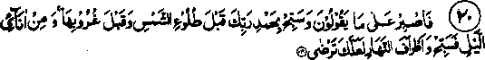
20. Therefore, (O Muhammad) be patient with what they say and celebrate (constantly) the praise of thy Lord and glorify Him (which includes both ‘Tasbih’ and observing five times ‘Fardh’ or obligatory Salaat) before the rising of the sun (which includes obligatory ‘Fjr’ or morning prayers) and before its setting (which includes both ‘Zuhr’ or noon Salaat and ‘Asr’ or afternoon Salaat) and glorify Him for some hours of the night (which includes ‘Maghrib’ or sunset prayers and ‘Ishaa’ or night prayers) and glorify Him at the two ends of the day (which refers again to ‘Fajr’ and ‘Asr’ Salaats and to the ‘Tasbihaat’ usually recited during these hours) so that thou may be pleased (in the Hereafter when thou shall receive bountiful rewards for these acts of devotion). (Tahaa: 130)
NOTE: The reiterated reference to ‘Fajr’ and ‘Asr’ stresses the greater importance of these two Salaats, a fact that forms the ' content of numerous Ahadith.
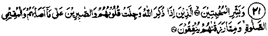
21. And, (O Muhammad) give good tidings (of the promise of Jannah and winning the pleasure of Allah) to the humble (those who bow, in humility, to the Commandments of Allah); those whose hearts, are filled with fear when Allah is mentioned (their hearts are awed by His. Greatness); and those who persevere in the face of affliction; and those who establish Salaat and those who spend (as Sadaqah) of what We bestowed upon them. (Hajj: 34-35)
NOTE: These Ayaat, with detailed commentary, have been quoted at No. 16, in the first Chapter of this book.
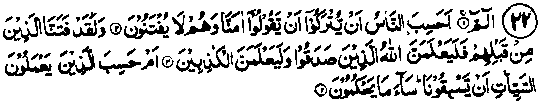
22. Alif-Laam-Meem. Do men imagine that they will be left (alone) on saying, ‘We believe’ and will not be tested (with all manners of afflictions). Lo! We did test those who were before them. (And, after the trial, some were proved to be true to their claims about ‘Imaan’ or Faith, while others turned out to be false and insincere. Likewise, in their case) Allah will distinguish (after putting them to trial) those who are sincere in their profession of Faith and truthful in their claims of love (for Allah), from those who are feigning (false) and insincere. Or do those who do ill deeds imagine that they can outstrip Us? Evil is that which they decide! (al-‘Ankabut: 1-4)
NOTE: For, it is in such afflictions that the true Believers turn to Allah more devoutly, while the un-enlightened ones sink deeper into sheer despair, some few forsake Islam and fall prey to heresy, others begin to support the evil-doers for fear of suffering persecution at their hands.
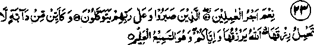
23. An excellent reward for those who do (good); who persevere, and put their trust in their Lord and Cherisher (in straitened circumstances). And (if you are uncertain about the source from which your sustenance will be provided for you, just consider)
how many an animal there is (that beareth) not its own provision! Allah provides for it and for you. And He is the All-Hearing (He listens to everybody who prays to Him) and the All-knowing. (He knows what state or circumstances everybody is in, at all times) so always ask of Him your needs. (al-Ankabut: 58-60)
24. Surely the patient will be paid their reward, without measure. (az-Zumur: 10)
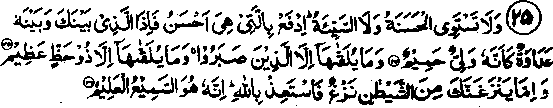
25. The good deed and the evil deed are not alike; repel the evil deed with one which is better. Then Lo! He, between whom and thee there was enmity, (will become) as though he was a bosom friend. (That is to say, the act of taking revenge upon the wrongdoer does not dispel the feeling of enmity from his heart. It rather aggravates his animosity. IL on the other hand, you generously forgive him his wrongs and treat him with kindness, he will, unless utterly mean or ignoble by nature, naturally be swayed by feelings of gratitude for you, cease to harbour ill-will against you and, eventually, become a sincere friend. However, as it is the most demanding act of moral excellence to recompense good for evil, or to show forgiveness towards one’s persecutors after gaining an upper hand, Allah says:) But none are granted it (this quality) save those who exercise patience (and self-restraint because they have cultivated a habit of remaining patient in afflictions), and none are granted it save persons of the greatest good fortune. And if evil promptings from the devil provoke thee (for example, should the devil whisper into your ears: It is a disgrace to be kind to such an enemy or, should he say to you’. ’If you show kindness to the wrong-doer, it will encourage him to persist in oppression’) then, seek refuge in Allah. Lo! He is the All-Hearing the All-Knowing. (Ha,Mim as-Sajdah: 34-36)
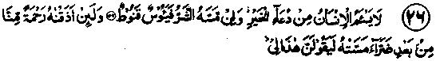
26. Man tireth not of praying for good fortune. And if ill touches him, then he is disheartened, desperate (a believer should not despair of the Mercy of Allah). And, verily, when, We give him a taste of Mercy from Ourselves, after some hurt that hath touched him, he is sure to say, This is my due right, by merit." (Ha, Mim, as-Sajdah: 49-50)
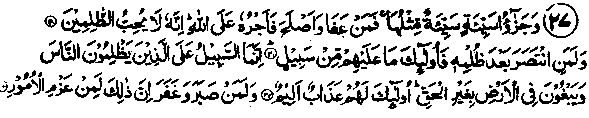
27. And the recompense for an injury is an injury, equal thereto (in degree); (i.e. if somebody does wrong to another person, the wronged person has a right to inflict an equal injury upon the wrong-doer, provided that the act is otherwise lawful according to the Shari‘ah i.e., Islamic Law). But if a person forgives the wrong-doer and makes reconciliation, his reward is due from Allah, for Allah loveth not those who do wrong. And indeed if any person do defend (revenge) themselves after a wrong done to them, against such there is no cause of blame. The blame is only against those who oppress men with wrong-doing and insolently transgress beyond bounds, through the land (in defiance of what is right and just). For such, there will be a punishment, grievous. But, indeed, if any show patience (when oppressed by others), and forgive (the oppressor), that would truly show great courage and resolution in conduct of affairs. (ash-Shura: 4043)
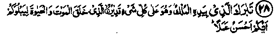
28. Blessed is He In Whose Hands is the Sovereignty (All kingdoms of the world are in His Power) and Hath power over all created things; He Who created death and life so that He may try you as to which of you is the best in deeds (and conduct)'. (al-Mulk: 12).
(Commenting on the Ayaat) Qataadah Rahmatullah alaihe says: "Allah Ta'ala has created this world and made it an abode of life and death, and He has made the Akhirah a place for reward or punishment for the deeds (committed in this world) and an abode of Eternal Life!" (Durre-Manthur)
In other words, the sufferings of this world have an end at the death of the sufferer. And, as death is inevitable, the sufferings of this world are temporary, lasting, at the most till the death of the sufferer, while the sufferings of the other world (Akhirah) are eternal, because the life of Akhirah is everlasting, not limited by death, which is non-existent in that world. '
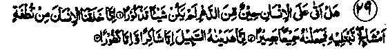
29. Has not there come upon man any period of time when he was a thing of no account. Verily, We created man from a drop of mingled sperm (out of an admixture of male and female seed) in order to try him; so We gave him (the gifts of) hearing and sight (That is, We granted him eyes and ears, so that he should see, on his own, what is right or listen to others who might guide him on to the right path). Then, We showed him the way (of truth and goodness); (then mankind split into two broad divisions:) those who are thankful (and believe in Allah) and those who are ungrateful (or nonbelievers). (ad-Dahr: 1-5)
NOTE: This world is an abode of trials. So, before showing ingratitude at any turn of fortune, we must think a while how indebted we all are to Allah Ta‘ala for His boundless favours. Then, of course, we shall realize that it is more befitting to express our gratitude, rather than to complain to Him of misfortunes.
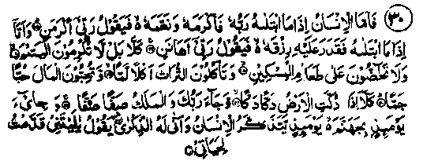
30. Now as for a man, when his Lord tries him, granting him honour and gifts (these favours include affluence worldly honour, etc., and they are granted with a view to trying and judging to what extent the beneficiary is grateful to Allah, what good deeds he is performing as an expression of gratitude to Him, and whether or not he is spending money and employing his worldly honour for earning the pleasure of Allah), then says he: ‘My Lord hath honoured ne; (i.e. he is puffed up by honour and respect among people, little knowing that these things should not make anyone proud. Although it is essential to be grateful to Allah Ta'ala for these favours, it is ' equally important to receive them with the apprehensions of a person going through a test; it is Allah’s wont to try His men after granting them bountiful flavours. And when His Lord wants to try him in another way), He tests him by restricting his sustenance, (wherewith He means to try his patience and the measure of his acquiescence to the Supreme Will of Allah), he sayeth (in despair), ‘My Lord hath humiliated me!" (He wrongly thinks that it is his due right to partake of Allah’s flavours. So, when his livelihood is straitened, he complains of being disgraced by Allah, though the fact is that prosperity is not a sign of honour, in the sight of Allah nor do hunger and poverty signify disgrace, in His sight). Nay, Nay! (Insufficiency of provisions does not, at all, signify one’s disgrace; it is only his evil deeds that disgrace man in the sight of Allah. For example, it does not become you) that you do not care for the orphans; nor do you encourage (one another) to feed the poor. And you devour inheritance all (with greed). (You usurp what is rightful property of others, especially the belongings of the orphans and the weaklings who cannot defend themselves against injustice). And you love wealth with inordinate love (which is the root cause of all evil deeds, all types of injustice and all taints of the soul. It is a pity that you take these sins lightly). Oh no! (But you must not take them lightly). When the earth is reduced to bits; and thy Lord cometh and His angels, rank upon rank (on the Day of Resurrection); and Jahannam is brought near (facing them), on that Day man will remember (realize)! But how will the remembrance (realization) then avail him. He will say, “Ah! "Would that I had sent before me (good deeds) for this my (future) life!" (al-Fajr: 15-24)
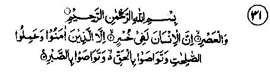
31. By the (token of) Time (through the Ages’ which reminds us that we should take a lesson from the variations of time or fortune i.e. occasions of joy and sorrow, prosperity and adversity, health and illness, etc. These turns of fortune bear testimony to the fact that) verily man is in loss (in wasting away the invaluable hours of life apportioned to him), save those who have Faith (Imaan) and do good deeds and (always) exhort one another to uphold Truth (and remain steadfast therein); and, (also) exhort one another to remain patient and persevering (which includes (i) cultivating constancy in devotions and a deep concern for pious deeds (ii) curbing one’s wanton desires and avoiding other forbidden things, and (iii) observing patience in adversities). (Surah al-Asr, complete)
The foregoing thirty-one Ayaat refer to the virtues of patient perseverance in afflictions. Obviously, a detailed commentary on each of the Ayaat explaining various warnings would have made the discussion too lengthy for the scope of this book. All these verses have a few common themes, which may be briefly put as follows: - (a) This world is a transitory abode created for the trial of man.
(b) Worldly wealth and honour should not make anyone vain or proud of oneself.
(c) Poverty and hunger should not be regarded as signs of disgrace and humiliation.
(d) Prosperity, in as much as it demands an expression of one’s gratitude to Allah Ta'ala, is a mode of trial.
(e) Poverty is yet another mode of trial, as it demands one’s patience and acquiescence in the Supreme will of Allah Ta'ala (‘Radhaa’ or the state of being well-pleased with whatever is decreed by Allah Ta'ala).
(f) Of the two, the affluence of wealth is a far more exacting ordeal; and there are few who can cope creditably with it, while there are many who foil to do so.
It was in view of these harmful effects of riches that Rasulullah Sallallaho alaihe wasallam once remarked to the following effect: "I have no fears as to (your behaviour in) poverty and hunger, but I am afraid that when you have abundance of worldly things, you will become absorbed in it, as did those who lived before you; and it will similarly bring you to damnation.’ So, we should be very vigilant and cautious against alluring riches; and we should endure poverty and other afflictions with patience. For, these tribulations are sent by Allah Ta'ala to His men by way of trial.
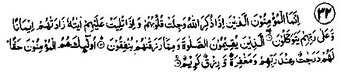
32. (It goes without saying that) true believers (Mo’mineen) are those who, when Allah is mentioned, feel a tremor in their hearts. And when the revelations of Allah are recited unto them, these increase their Faith (Imaan). And they put their trust in Allah alone; those who establish Salaat, and spend (freely) of that which We have bestowed upon them. Such in truth are the Believers. For them, there are high ranks of honour with their Lord, and Forgiveness (of sins) and generous provision, (al-Anfaal: 2-4)
Note: These Ayaat have already been quoted at No. 13 above, in the first Chapter of this book. However, it is worthwhile re-quoting them at this place as they are very much relevant here for indicating that a Mo’min (true believer), according to these Ayaat, puts his trust in Allah Ta'ala alone and entertains no hopes of getting help from any being other than Allah Ta'ala. As a reward for attaining to this perfection of Faith, Allah Ta'ala promises that: (a) He will exalt the believers to high ranks of dignity (in Jannah), (b) forgive their sins and (c) grant them honourable sustenance.
Each one of these promised favours is of extreme value and, as such, each one should be taken as sufficient incentive for the cultivation of this supreme virtue i.e. ‘Tawakkul’. And, as Allah Ta'ala has promised three great favours for those who are characterised by this quality, no measure of struggle should be deemed too much for its achievement.
Ibne Abbas Radhiallaho anho says: "‘Tawakkul’ implies entertaining no hopes from anyone other than Allah Ta'ala". Sa‘eed bin Jubair Rahmatullah alaihe says: "Tawakkul is the sum and substance of Imaan i.e. Faith".
In the entire Holy Qur’an, if there had been only one Ayat on the subject of faith and trust in Allah Ta'ala, it would have been sufficient. Nevertheless, there are frequent references—far more frequent than allusions to any other subject-to keeping full trust in Allah Ta'ala, having sole reliance on Him and none else, seeking His help in all one’s needs and adversities and concentrating all one’s hopes on Him alone. And, by way of exhortation, reference has been made to the lives of the pious and favoured beings of Allah Ta'ala);
who, possessed this virtue par excellence. As a matter of fact, ‘Tawakkul’ is the fruit of ‘Tauheed’ (the belief in the oneness of Allah Ta'ala, the more firmly grounded anybody is in his belief in ‘Tauheed’, the more advanced he will be in ‘Tawakkul’. And, since ‘Tauheed’ is the fundamental creed of Islam and the essence of Imaan (faith), no virtue is of any value in the sight of Allah Ta'ala unless it is based on a true belief in the oneness of Allah Ta'ala. The entire body of religious beliefs as well as the code of Islamic Law (the Shariah) is founded on ‘Tauheed’. It is, obviously, owing to the extreme value of this quality that the subject has been treated, specifically and emphatically, at various places in the Holy Qur’an. As for ‘Tawakkul’, Allah Ta'ala has promised His acceptance and pleasure to those who possess this virtue-a boon which far excels all other rewards—which everyone must aspire to achieve, even if he has to sacrifice his life for it.
Says Allah Ta'ala in the Holy Qur’an:
‘Verily Allah loves those who put their trust in Him’. (Ale-Imran: 159)
Can any spiritual value excel the privilege of being loved by Allah Ta'ala? Imagine a human being rising to the status of becoming the loved one of Allah Ta'ala, Who is the Sovereign of the Universe, the Lord of this world and the Hereafter. Is there any other glory or pride, of this world or the Hereafter, which can excel this privilege? What is more, Allah Ta'ala Himself takes the responsibility and promises that He will suffice him who puts his trust in Allah (i.e. adopts ‘Tawakkul), Whose help should such a person require for the fulfilment of his needs? On the same subject, there is a Hadith to the following effect:
Rasulullah Sallallaho alaihe wasallam says: "If you were to put all your trust in Allah as He should be trusted, He would grant you your sustenance, as He does to the birds". It has been narrated in another Hadith, to the effect that: "He who cuts off and turns himself away from the world (i.e. takes no thought of receiving help from any created being), and turns to Allah Ta'ala alone, Allah Ta'ala is sufficient (Protector) for him against all manners of afflictions, and He provides for him from sources he never could imagine’’.(Ihyaa-ul- Uloom)